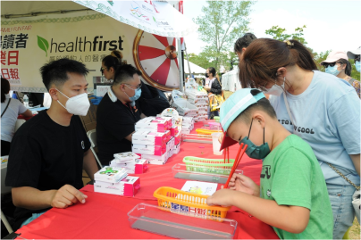
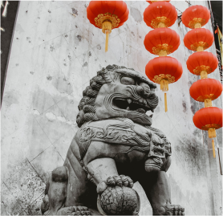
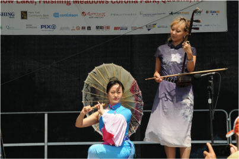
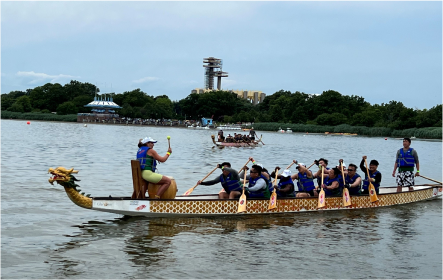
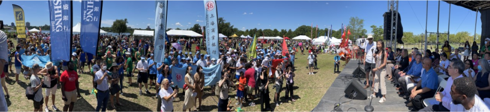
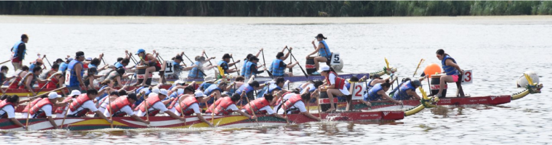

FOR IMMEDIATE RELEASE
DAASSOCIATES PR
914-299-0837
DAAssociatesPR@gmail.com
www.hkdbf-ny.org
THE COLORFUL HONG KONG TRADITION RETURNED TO NEW YORK
- THE 30th HONG KONG DRAGON BOAT FESTIVAL in NEW YORK (HKDBF NY)
-CELEBRATING THE YEAR OF THE TIGER!
DRAGONS, 100's of COMPETITORS, MULTI-CULTURAL
PERFORMERS,TRADITIONAL ARTS & CRAFTS, INTERNATIONAL FOOD
INVADED MEADOW LAKE, FLUSHING MEADOWS CORONA PARK, QUEENS, NY OVER THE WEEKEND FREE
THE OLDEST, LARGEST, MOST TRADITIONAL DRAGON BOAT FESTIVAL IN THE US!
The Festival highlighted three major issues this year as we came roaring back for the Year of the Tiger!
1. Our participation in the reopening our economy, as we are planning for a full scale festival.
2. Promotion of Covid vaccination/booster, Post Covid mental/ physical wellness.
3. Bringing attention to the Prevention of Asian hate crimes
DAASSOCIATES PR
914-299-0837
DAAssociatesPR@gmail.com
www.hkdbf-ny.org
THE COLORFUL HONG KONG TRADITION RETURNED TO NEW YORK
- THE 30th HONG KONG DRAGON BOAT FESTIVAL in NEW YORK (HKDBF NY)
-CELEBRATING THE YEAR OF THE TIGER!
DRAGONS, 100's of COMPETITORS, MULTI-CULTURAL
PERFORMERS,TRADITIONAL ARTS & CRAFTS, INTERNATIONAL FOOD
INVADED MEADOW LAKE, FLUSHING MEADOWS CORONA PARK, QUEENS, NY OVER THE WEEKEND FREE
THE OLDEST, LARGEST, MOST TRADITIONAL DRAGON BOAT FESTIVAL IN THE US!
The Festival highlighted three major issues this year as we came roaring back for the Year of the Tiger!
1. Our participation in the reopening our economy, as we are planning for a full scale festival.
2. Promotion of Covid vaccination/booster, Post Covid mental/ physical wellness.
3. Bringing attention to the Prevention of Asian hate crimes


Aug 2nd, 2022- NY, NY - The "Year of the TIGER," brought a successful, full scale, two day 30th Hong
Kong Dragon Boat Festival in New York back to Meadow Lake. This Free Multicultural Festival and
Sporting
Event entertained thousands on the land side and had fierce competition on the water with 74 races
over
the weekend with 170 Teams competiting
HKDBF NY 2022 festivities conclude this Thursday with a Celebratory Gala Dinner at the Central Park Boat House for Invited guests, Celebrating the success of the 30th HKDBFNY as a way to thank and recognize the hard work and commitment of all involved and Launching the Sponsorship Campaign to fund the 2023 31st HKDBFNY!
HKDBFNY featured events for the entire family, Special races on Sunday Included the US Dragon Boat Open Championship Race, the Hong Kong SAR 25th Anniversary Challenge, the Sponsors Challenge, a Media Invitational and the Seniors Invitational. This year's Corporate Invitational was a good one, with a number of Corporate Teams racing for their companies. . There we're also special Educational and Health Care Invitationals and the always exciting and rewarding Charity race, featuring funds raised by the participating teams to be donated to the charities designated by the winning teams. Over the years the Charity Race has contributed in excess of $300,000 to various NYC charities.
HKDBF NY 2022 festivities conclude this Thursday with a Celebratory Gala Dinner at the Central Park Boat House for Invited guests, Celebrating the success of the 30th HKDBFNY as a way to thank and recognize the hard work and commitment of all involved and Launching the Sponsorship Campaign to fund the 2023 31st HKDBFNY!
HKDBFNY featured events for the entire family, Special races on Sunday Included the US Dragon Boat Open Championship Race, the Hong Kong SAR 25th Anniversary Challenge, the Sponsors Challenge, a Media Invitational and the Seniors Invitational. This year's Corporate Invitational was a good one, with a number of Corporate Teams racing for their companies. . There we're also special Educational and Health Care Invitationals and the always exciting and rewarding Charity race, featuring funds raised by the participating teams to be donated to the charities designated by the winning teams. Over the years the Charity Race has contributed in excess of $300,000 to various NYC charities.


The program on the Main Stage showcased the best Regional multicultural artists and traditional
music/dance from across the globe. We we're thrilled to have NY based young rapper Cameron Sean join
us
to perform his very relevant rap, "Stop the Hate!" The ever popular Shaolin Martial Artists returned
for
performances both days. We had several other very Special Musical Guests this year including Musical
Performance by Terry King's Drifters featuring Charlie Thomas Jr and Benidito King of the world
renowned
Drifters. The two sons of the Drifters Charlie Thomas and Ben E. King, who's hits were Stand By Me
and
Spanish Harlem. The Chinese Theatre Works Co. performed two great shows today and Master Storyteller
Jonathan Kruk spun "Dragon Tales'" during the festival. In addition, we had demonstrations of
traditional Asian folk arts and crafts, booths staffed by sponsors and many community-based
organizations.
HKDBF-NY, an international, multi-cultural celebration and sporting event, the largest multicultural Festival in New York and the largest festival of its kind in the U.S. HKDBF-NY keeps up the age old tradition of Dragon Boat Racing in colorful, custom made teak boats, which are virtual works of art gliding on water. Custom made by a small coterie of craftsmen in Hong Kong, weighing one ton each, colorfully painted with a Dragon head at the front and Dragon tail at the rear, the boats are piloted by up to 20 crewmen, including 18 paddlers, a drummer and steers person.
For twenty-nine successful years HKDBF-NY has attracted a diverse, multi-cultural audience of more than 20,000 attendees throughout North America. This year with 100+ teams participating involving more than 1,000 competitors from across the U.S. and Canada, this year's festival is expected to be notable for it's 2 day return, scale and fierce competition.

HKDBF-NY, an international, multi-cultural celebration and sporting event, the largest multicultural Festival in New York and the largest festival of its kind in the U.S. HKDBF-NY keeps up the age old tradition of Dragon Boat Racing in colorful, custom made teak boats, which are virtual works of art gliding on water. Custom made by a small coterie of craftsmen in Hong Kong, weighing one ton each, colorfully painted with a Dragon head at the front and Dragon tail at the rear, the boats are piloted by up to 20 crewmen, including 18 paddlers, a drummer and steers person.
For twenty-nine successful years HKDBF-NY has attracted a diverse, multi-cultural audience of more than 20,000 attendees throughout North America. This year with 100+ teams participating involving more than 1,000 competitors from across the U.S. and Canada, this year's festival is expected to be notable for it's 2 day return, scale and fierce competition.
The tradition of Dragon Boat Racing is an annual Chinese rite commemorating the idealistic poet and
performer Qu Yuan who drowned himself in the third century B.C. to protest against his emperor's
policies. The locals raced in their boats in an attempt to rescue the poet. To prevent fish and
water dragons from eating his body, the locals beat their drums and splashed their paddles. This was
the beginning of Dragon Boat Racing.
Admission to the HKDBF-NY was Free, with Events taking place under beautiful skies, the weather couldn't have been better. - Festival attendees took the MTA shuttle bus for easy and safe transportation to the Festival site from the #7 Train at CitiField.
This year's Sponsors included; the Hong Kong Economic and Trade Office, NY., Shanghai Commercial Bank, Con Edison, New York Community Bank, Flushing Bank, Resorts World, Northwell Health, JPMorgan Chase, Fios by Verizon, ITALKBB, new york state of health, Vallo Transportation, Ltd., Flushing Meadows Corona Park, Queens Chamber of Commerce, Office of the Queensborough President, Donovan Richards, Jr., NYC &Co, Discover Queens
Media &Creative Partners: PIX 11 Sing Tao Daily News, The Queens Courier, MultiCultural Radio Broadcasting, Inc.(AM1480, AM1380,Sino Television, Niu TV) GoodNews Broadcast.com,F usia Communications, Inc., Inak Design, Additional support provided by the Hong Kong Tourism Board, AARP, Attending Home Care, the Queens Chronicle, The Island, YELP, TinnieAdvertising and ChinaAmerica Radio.

Admission to the HKDBF-NY was Free, with Events taking place under beautiful skies, the weather couldn't have been better. - Festival attendees took the MTA shuttle bus for easy and safe transportation to the Festival site from the #7 Train at CitiField.
This year's Sponsors included; the Hong Kong Economic and Trade Office, NY., Shanghai Commercial Bank, Con Edison, New York Community Bank, Flushing Bank, Resorts World, Northwell Health, JPMorgan Chase, Fios by Verizon, ITALKBB, new york state of health, Vallo Transportation, Ltd., Flushing Meadows Corona Park, Queens Chamber of Commerce, Office of the Queensborough President, Donovan Richards, Jr., NYC &Co, Discover Queens
Media &Creative Partners: PIX 11 Sing Tao Daily News, The Queens Courier, MultiCultural Radio Broadcasting, Inc.(AM1480, AM1380,Sino Television, Niu TV) GoodNews Broadcast.com,F usia Communications, Inc., Inak Design, Additional support provided by the Hong Kong Tourism Board, AARP, Attending Home Care, the Queens Chronicle, The Island, YELP, TinnieAdvertising and ChinaAmerica Radio.
HKDBFNY IS A NON PROFIT 501(c-3)org.
Media Contact: DAAssociatesPR@gmail.com - 914-299-0837 8/2/22-NY,NYFor immediate release - Sing Tao Photo Contest of the Hong Kong Dragon Boat Festival in New York 2022 is on!
$800 cash award for Photo Contest winners of the Hong Kong Dragon Boat Festival in New York - 2022
A photo contest of the Hong Kong Dragon Boat Festival in New York 2022 is being held by Sing Tao Daily and sponsored by Healthfirst and Hong Kong Economic and Trade Office. Everyone is welcome to submit photographs taken during the two days of the 2022 Festival. No matter you are a professional photographer with SLR camera, or you are amateur with your smartphone, your participation is highly encouraged.
The first, second and third winners of the photo contest will win a prize of $300, $200, $100, respectively, along with 10 excellence prizes of $20. Besides, each prize winner will be awarded a medal as well as delicate gifts. Awarded photos will be published on print and on line by Sing Tao Daily.
Submission Details:
1) Email photos to nystevent@gmail.com
2) JPG format only, the file size may not exceed 20MB
3) Do not submit more than 20 photos
4) Rename each photo with photographer’s name followed by a number. (eg. MayChan1.jpg, MayChan 2.jpg … MayChan 20.jpg)
5) Deadline: Aug 31, 2022
Media Contact: DAAssociatesPR@gmail.com - 914-299-0837 8/2/22-NY,NYFor immediate release - Sing Tao Photo Contest of the Hong Kong Dragon Boat Festival in New York 2022 is on!
$800 cash award for Photo Contest winners of the Hong Kong Dragon Boat Festival in New York - 2022
A photo contest of the Hong Kong Dragon Boat Festival in New York 2022 is being held by Sing Tao Daily and sponsored by Healthfirst and Hong Kong Economic and Trade Office. Everyone is welcome to submit photographs taken during the two days of the 2022 Festival. No matter you are a professional photographer with SLR camera, or you are amateur with your smartphone, your participation is highly encouraged.
The first, second and third winners of the photo contest will win a prize of $300, $200, $100, respectively, along with 10 excellence prizes of $20. Besides, each prize winner will be awarded a medal as well as delicate gifts. Awarded photos will be published on print and on line by Sing Tao Daily.
Submission Details:
1) Email photos to nystevent@gmail.com
2) JPG format only, the file size may not exceed 20MB
3) Do not submit more than 20 photos
4) Rename each photo with photographer’s name followed by a number. (eg. MayChan1.jpg, MayChan 2.jpg … MayChan 20.jpg)
5) Deadline: Aug 31, 2022